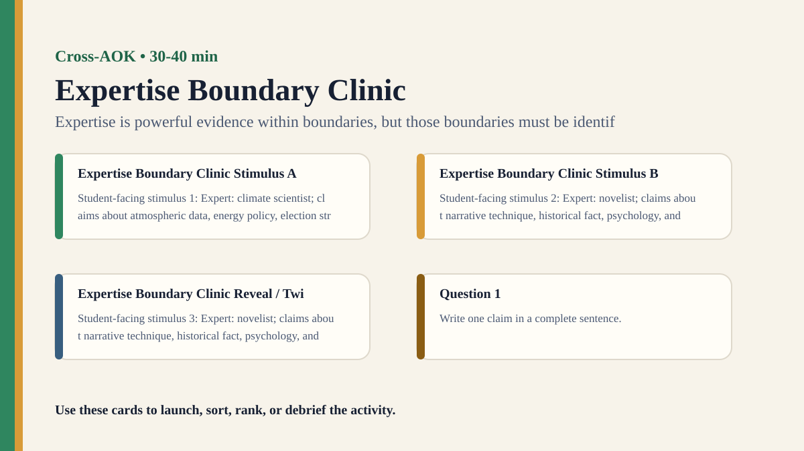

Detailed activity
Expertise Boundary Clinic
Students decide when expert authority should be trusted, challenged, or limited across different knowledge claims.
Free classroom activity
Big Idea
Expertise is powerful evidence within boundaries, but those boundaries must be identified.
Teacher Summary
Students evaluate the scope and limits of expert authority.
Use claim cards to distinguish expertise, credentials, evidence, and overreach.
Materials
- Expert profile cards and claim cards from different AOKs.
- Boundary checklist: domain, evidence, uncertainty, conflict of interest, consensus.
Ready to run
Classroom Resource Pack
Use the printable pack for concrete stimulus cards, a student recording sheet, teacher prompts, and a visual prompt image.
Visual Prompt

Student Prompt
Inspect the Expertise Boundary Clinic stimulus. Record one first claim, the evidence you used, your confidence, and what would make you revise.
Actual Lesson Questions
| # | Question for students | Teacher cue |
|---|---|---|
| 1 | Write one claim in a complete sentence. | Teacher cue: look for a clear claim, not just a description. |
| 2 | List two pieces of evidence. | Teacher cue: students should name visible words, data, source features, method features, or contextual clues. |
| 3 | Separate observation from interpretation. | Teacher cue: this is where assumptions, framing, models, or perspective usually appear. |
| 4 | Circle one confidence level and justify it. | Teacher cue: confidence is data for the debrief, not a grade. |
| 5 | Name one piece of missing information. | Teacher cue: push for method, source, context, comparison, or definitions. |
| 6 | Answer using the activity as evidence. | Teacher cue: students should move from the classroom example to a general TOK issue. |
Concrete Stimulus Packet
Stimulus
Same Claim, Different Standards
Claim: “This is reliable knowledge.” A mathematician asks for proof; a historian asks for source context; a scientist asks for method and replication; an artist asks for interpretation and form.
Use this to compare evidence standards across AOKs.Stimulus
Expertise Boundary Clinic Example
Expert: climate scientist; claims about atmospheric data, energy policy, election strategy, and personal lifestyle choices.
Use this as the activity-specific version of the stimulus.Stimulus
Comparison / Twist Card
Expert: novelist; claims about narrative technique, historical fact, psychology, and moral value.
Reveal after students commit to their first judgement.Teacher Key / Reveal
The key move is not the “right answer”; it is the moment students see how expertise is powerful evidence within boundaries, but those boundaries must be identified.
Setup Notes
- Create expert cards that include real strengths and clear limits.
- Include claims that are inside, adjacent to, and outside the expert's domain.
Ready-to-Use Examples
- Expert: climate scientist; claims about atmospheric data, energy policy, election strategy, and personal lifestyle choices.
- Expert: novelist; claims about narrative technique, historical fact, psychology, and moral value.
Run Resources
- Boundary checklist: domain, evidence, consensus, conflict of interest, uncertainty.
- Claim sorting mat: inside expertise, adjacent, outside, needs more evidence.
Procedure
- Give groups an expert profile and several claims the expert might make.
- Students decide which claims fall inside, near, or outside the expert's domain.
- Groups identify what extra evidence would be needed for each claim.
- Compare cases where expertise should carry more or less weight.
- Debrief responsible trust in knowledge communities.
Teacher Language
- Respecting expertise includes knowing its boundaries.
- What would make this expert's claim stronger or weaker evidence?
TOK Debrief Questions
- Knowledge question: When is expert authority a good reason to believe?
- How can knowers respect expertise without surrendering judgement?
- What counts as overreach beyond a domain of knowledge?
Knowledge Questions
- When is expert authority a good reason to believe?
- How should knowers identify the limits of expertise?
- Can trust and critical thinking work together?
Sample Student Output
- The expert had strong authority on data interpretation but less on policy trade-offs.
- We trusted the expert more when they stated uncertainty and evidence limits.
Exhibition Object Idea
An expert profile card annotated with inside-domain and outside-domain claims.
Adaptations
- Support: use one expert and four claim cards.
- Challenge: include a conflict of interest or expert disagreement.
Extension Tasks
- Students evaluate an expert source they might use for a TOK exhibition commentary.
- Compare expert authority in medicine, art criticism, law, and mathematics.
Teacher Notes
Avoid framing expertise as blind trust or total skepticism.
Push students to name criteria for responsible trust.